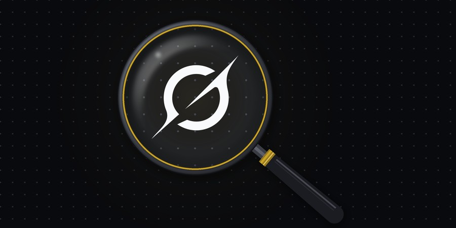

Grokipedia Truth Audit
auditfallacy · citation checks
Audits of Grokipedia articles, done on saved snapshots so every finding can be traced back to the text that was read.
What it is
Grokipedia is xAI's AI-written encyclopedia. This repo checks how its articles reason and how they cite sources. Articles are grouped by topic, and each topic has its own results page in the repo.
Method
- Saved snapshots. Each article is saved before it's audited, so a finding points to the exact text that was read, even if the live article changes later.
- Two kinds of check so far. A fallacy scan that reads each sentence and flags reasoning faults, and a citation and fact check.
- Data and scripts included. The snapshots, flags, tables, and scripts are all in the repo, so the findings can be checked or rerun.
Every flag is a model's judgment, not a fact-check. A flag means the article's own reasoning has a gap, not that the claim is false. Treat single flags as leads to check by hand.
Current topics
-
Circumcision
58 related articles · fallacy scanThe full read flagged 225 reasoning faults, each tagged by the side it favors: 154 pro, 49 anti, and 22 neutral. A blind rescan of 24 of the articles kept the same lean, but only 60% of the flagged sentences were flagged again.
-
Baruch Spinoza
1 article · citation and fact checkFrom citation [90] on, the article's citation numbers appear shifted by nine places, so 110 of its 389 citation markers (28%) lead to an unrelated or missing source.
Repo: neuresthetics/grokipedia-truth-audit
Credits
The Grok logo in the header image is a trademark of xAI, used here only for identification. This project is not affiliated with xAI. Logo source: Wikimedia Commons.